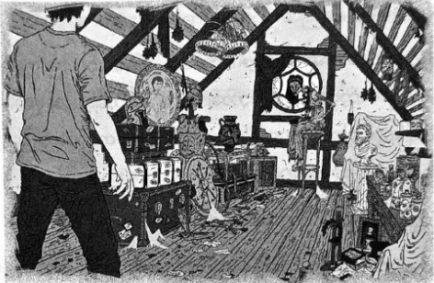

သေမင်းကို ချောင်းကြည့်မိခြင်း
သွေးနှောသင်တန်းတွင် လူချစ်လူခင် များချင်ပါက သတင်းဆိုးကို ယူဆောင်၍ တာဝန်မှ ပြန်မလာသင့်။ ပင်လယ်ထဲမှ ပါစီ တက်လာသည်နှင့် သူ ပြန်ရောက်လာသော သတင်းမှာ ပျံ့သွားပြီဖြစ်သည်။ လောင်းအိုက်စ်လန်၏ မြောက်ဘက်ကမ်းခြေ ဖြစ်ပြီး လူများ မမြင်နိုင်ရန် မှော်ပညာဖြင့် စီရင်ထား၏။ ဤကမ်းခြေတွင် နတ်သွေးနှောသူများ၊ နတ်များနှင့် လမ်းအလွန်ပျောက်နေသော ပီဇာပို့သူမှအပ မည်သူမှ ရောက်မလာတတ်ကြ။
ယနေ့အတွက် အစောင့်တာဝန်ကျသူမှာ ဟားမီးစ်အဆောင်မှ ကော်နာ စတိုလ်ဖြစ်ပြီး ပါစီ့ကိုမြင်လျှင် အလွန် စိတ်လှုပ်ရှားကာ ကင်းစောင့်နေသော သစ်ပင် ပေါ်မှ ကျွမ်းပြန်ကာ ပြုတ်ကျလာ၏။ ထို့နောက် ခရုသင်းကို အားပါးတရ မှုတ်ကာ အချက်ပေးရင်း ပါစီ့ထံ ပြေးလာ၍ နှုတ်ဆက်လိုက်သည်။
ကော်နာမှာ မခိုးမခန့် ပြုံးတတ်ပြီး ဟာသဉာဏ် ရင့်သန်လွန်းသူလည်း ဖြစ်၏။ လူကောင်း တစ်ယောက် ဖြစ်သော်လည်း သူ့အနားတွင် ပိုက်ဆံအိတ်ကို သတိထားရန် လို၏။ အညိုရောင် ဆံပင်ကောက်ကောက် ရှိပြီး အစ်ကို ဖြစ်သူ ထရာဗစ်ထက် အနည်းငယ် အရပ်ပုသဖြင့်သာ သူတို့နှစ်ယောက်ကို ခွဲခြားသိနိုင်ခြင်း ဖြစ်သည်။ လုပ်ခ်နှင့် လုံး၀ ပုံစံ မတူကြသဖြင့် ဟားမီးစ်၏ သားများ ဖြစ်ကြောင်း ယုံရန် ခက်လှသည်။
“ပါစီ … ဘာဖြစ်လာတာလဲ … ဘက်ကင်ဒေါ့ဖ်ကော ဘယ်မှာလဲ”
ပါစီ မျက်နှာအမူအရာကို မြင်လျှင် ကော်နာ မပြုံးနိုင်တော့။
“ဆီလီနာတော့ ဒုက္ခပါပဲ … သိသွားရင် ခက်ပြီ”
သဲသောင်ပေါ်အတူတူ ဖြတ်လျှောက်ခဲ့ကြပြီး ကိုက်တစ်ရာကျော်သော နေရာတွင် သင်တန်းသားများ စိတ်အား တက်ကြွစွာဖြင့် ပြုံးလျက် ထွက်လာနေကြပြီ ဖြစ်သည်။ “ပါစီ ပြန်လာပြီ … အားလုံး အဆင်ပြေမှာပဲ … ဘာလက်ဆောင် ပါလာသလဲ” ဟု တွေးနေကြသလား ပါစီ စဉ်းစားနေမိသည်။
ထမင်းစားဆောင်နေရာတွင် ရပ်ရင်း သူတို့ကို စောင့်နေမိ၏။ သူ့ညံ့ဖျင်းမှုကို ခပ်လောလော သွားပြောစရာ မလို ဟု ထင်၏။ တောင်ကြားထဲရှိ သင်တန်းကို ပါစီ ပထမဆုံး စတွေ့ခဲ့စဉ်က မြင်ကွင်းမှာ နှစ်ပေါင်းများစွာ ကြာပြီဟု ထင်ရ သည်။
တောင်ကြားထဲတွင် တောင်ကုန်းများစွာ ရှိနေပြီး အမြင့်ဆုံး တောင်ကုန်းပေါ်တွင် တာလီယာ၏ ထင်းရှူးပင်ကို တွေ့ရကာ သစ်ကိုင်းတစ်ခုတွင် ရွှေသိုးမွေးကို ချိတ်ထားပြီး သင်တန်းကို ရန်သူများ မဝင်လာနိုင်ရန် မှော်ပညာဖြင့် စည်းတား ထားသည်။ အစောင့် တာဝန် ယူထားသော နဂါးလေး ပီလီယပ်စ်မှာ ယခုအခါ အလွန်ကြီး လာပြီး အဝေးမှပင် မြင်နိုင်၏။
ညာဘက်တွင် တောအုပ်ရှိနေပြီး ဘယ်ဘက်တွင် ကနူးလှေလှော်ကန်နှင့် ချော်ရည်များ ကျနေသော နံရံကြီး ရှိနေသည်။ အိုလံပစ်နတ်ဘုရား ဆယ့်နှစ်ပါး၏ အဆောင်ဆယ့်နှစ်ခုကို မြင်းခွာပုံစီလျက် ဆောက်ထားပြီး တောင်ဘက်တွင် စတော်ဘယ်ရီခင်း၊ လက်နက်တိုက်၊ အထပ်လေးထပ် မြင့်သော အိမ်ကြီးတို့ ရှိကြပြီး အပြာရောင် ဆေးသုတ် ထားသည်။
ပြောရလျှင် သင်တန်းမှာ မပြောင်းလဲဟု ဆိုနိုင်၏။ သို့သော် အဆောက်အအုံများကို ကြည့်ရုံနှင့် စစ်ပွဲကြီး လာတော့မည်ဟု မပြောနိုင်သော်လည်း နတ်သွေးနှောသူများ၊ ဆေတာများနှင့် နတ်ကလေးများ၏ မျက်နှာတွင်မူ မြင်နိုင် ပေသည်။
လွန်ခဲ့သော လေးနှစ်ကလောက် သင်တန်းတွင် သင်တန်းသား မများတော့။ အချို့မှာ လုံးဝ ပြန်ရောက် မလာ ကြဘဲ အချို့မှာ တိုက်ပွဲထဲတွင် ကျဆုံးခဲ့ကြသည်။ အချို့မှာ ရန်သူ့ဘက်သို့ ပူးပေါင်းသွားကြ၏။ သူတို့ အကြောင်း မည်သူမျှ မပြောဖြစ်ကြ။
သင်တန်းတွင် ဆက်ရှိနေသူများမှာ တိုက်ပွဲအတွေ့အကြုံ များလွန်းခဲ့ပြီး ပင်ပန်းနွမ်းနယ်နေကြပေပြီ။ ဟားမီးစ် အဆောင်သားများပင် ယခင်လို နောက်နောက် ပြောင်ပြောင် သိပ်မလုပ်နိုင် ကြတော့။ ရယ်ရခက် ငိုရခက်သော အခြေအနေတွင် ဟာသ လုပ်နေမိပါကလည်း ရယ်ရန် ခက်လှ၏။
စားသောက်ခန်းမဆီ အရင်ဆုံး ရောက်လာသူမှာ ခိုင်ရွန်ဖြစ်ပြီး မြင်းဖြူခန္ဓာကိုယ် အောက်ပိုင်းကို ပိုင်ဆိုင်ထားသူ အတွက် ဒုန်းစိုင်းပြေးလာရန် မခက်ချေ။ နွေရာသီကထက် မုတ်ဆိတ်များ ပိုထူနေပြီး အစိမ်းရောင်တီရှပ်ကို ဝတ်ထားကာ ကျော၌ လေးကို လွယ်ထား၏။
“ပါစီ .. တော်သေးတာပေါ့ … ဒါနဲ့ ..”
နောက်မှ ပြေးလိုက်လာသော အန်နာဘတ်ကို မြင်လျှင် ရန်ခုန်သံ မြန်လာသည်ဟု ပါစီ ဝန်ခံရပေလိမ့်မည်။ အန်နာဘတ် လှလှပပ ပြင်ဆင်ထား၍ မဟုတ်ချေ။ တိုက်ပွဲဝင်ရန် လေ့ကျင့်နေပြီး တာဝန်နှင့် ခရီးထွက်ရလွန်းသဖြင့် သူမ၏ ဆံပင်ဝါ ကောက်ကောက်များကို ဘီးပင် မဖြီးနိုင်။ ဘာဝတ်ထားသလဲ ဂရုမစိုက်သည်မှာ ကြာခဲ့ပြီ။ လိမ္မော်ရောင် သင်တန်းတီရှပ်ကို ဂျင်းဘောင်းဘီနှင့်သာ ဝတ်ထားပြီး တစ်ခါတစ်ရံ ချပ်ဝတ်တန်ဆာကို ထပ်၍ဝတ်တတ်သည်။ အများ အားဖြင့် နပန်းသတ်ပွဲ မဖြစ်ဘဲ စကားပြော၍ မရတော့။ မည်သို့ဆိုစေ အန်နာဘတ်ကို တွေ့ရလျှင် ခေါင်းထဲ နောက်လာ သည်က အမှန်ပင်။ မနှစ်ကနွေရာသီတွင် လုပ်ခ်မှာ ခရိုနော့စ် ဖြစ်လာခဲ့ပြီး ထိုအချိန်ကတည်းက အခြေအနေ ပိုဆိုး လာခဲ့၏။
အန်နာဘတ်က ပါစီလက်ကို ဆွဲကိုင်ရင်း …
“ဘာဖြစ်ခဲ့သလဲ … လုပ်ခ်ကော …”
“သင်္ဘောကြီး ပေါက်ကွဲသွားပြီ … လုပ်ခ်တော့ မသေဘူး … ဘယ်ရောက်နေလဲ ငါလည်း မသိဘူး …”
လူအုပ်ကို တွန်းဖယ်ရင်း ဆီလီနာဗြူရီဂတ် ရှေ့သို့ ထွက်လာသည်။ ဆံပင် မဖြီး၊ မိတ်ကပ် မလိမ်းနှင့် သူမပုံစံမှာ ပုံမှန်မဟုတ်။
“ချာလီကော … ဘယ်မှာလဲ ….”
လူအုပ်ထဲတွင်များ ပုန်းနေသလားဟု လိုက်ကြည့်နေ၏။ ခိုင်ရွန့်ကို ပါစီ အကူအညီတောင်းသည့် အကြည့်ဖြင့် ကြည့်လိုက်သည်။
ခိုင်ရွန် ချောင်းဟန့်သံပြုရင်း …
“အိမ်ကြီးထဲရောက်မှ ဆက်ပြောကြရအောင် ဆီလီနာ”
“ဘုရားရေ … ဘုရား … ဘုရား …”
ဆီလီနာ စတင်ငိုကြွေးချိန်တွင် ပါစီတို့အားလုံး ငေးကြောင်ရပ်နေမိပြီး ဘာမှ ပြောမိကြ။ နွေရာသီတစ်ခုလုံး ဆုံးရှုံးမှု များလှသော်လည်း ယခုအကြိမ်မှာ အဆိုးဆုံးပင်။ ဘက်ကင်ဒေါ့ဖ် မရှိတော့ခြင်းမှာ သင်တန်းတစ်ခုလုံး ဦးတည်ရာ မဲ့သွားသလို ခံစားရ၏။
အေးရီးစ်အဆောင်မှ ကလဲရစ် ရှေ့ထွက်လာပြီး ဆီလီနာကို ဖက်ထားလိုက်သည်။ သူတို့နှစ်ယောက်၏ ခင်မင်မှု မှာ အထူးခြားဆုံးပင်။ စစ်နတ်ဘုရား၏ သမီး နှင့် အချစ်နတ်သမီး၏ သမီးတို့ ခင်မင်ခြင်းမှာ ထူးခြားလွန်းသော်လည်း ကလဲရစ်၏ ပထမဆုံး ရည်းစားကိစ္စကို ဆီလီနာ အကြံဉာဏ် ပေးခဲ့ပြီးကတည်းက ကလဲရစ်မှာ ဆီလီနာ၏ သက်တော် စောင့် ဖြစ်လာ၏။
ကလဲရစ်မှာ အနီရောင် ချပ်ဝတ်တန်ဆာနှင့် ဖြစ်ပြီး အညိုရောင်ဆံပင်များကို နဖူးစည်းဖြင့် စည်းထားသည်။ အမြဲ မျက်နှာထား တင်းတင်းနှင့် ထွားကျိုင်းလှသော ခန္ဓာကိုယ်ရှိသော ကလဲရစ်မှာ ဆီလီနာကိုမူ ညင်ညင်သာသာပင် ပြောနေသည်။
“လာပါ … အိမ်ကြီးဆီ သွားရအောင် … ချောကလက်ပူပူလေး ငါ ဖျော်တိုက်ပါ့မယ် …”
အားလုံးမှာ အဆောင်များဆီ ပြန်သွားကြသည်။ မည်သူမှ သင်္ဘော ပေါက်ကွဲသွားပုံသတင်းကို မကြားလို ကြတော့။ အန်နာဘတ်နှင့် ခိုင်ရွန်သာ ကျန်ရစ်ခဲ့သည်။
မျက်ရည်သုတ်ရင်း အန်နာဘတ်က …
“နင်ပါ မသေခဲ့တာတော့ ဝမ်းသာပါတယ် ရေညှိဦးနှောက်”
“အင်း … ငါလည်း ဝမ်းသာပါတယ်”
ပါစီ့ ပခုံးပေါ် လက်တင်ရင်း ခိုင်ရွန် ပြောလိုက်သည်။
“မင်း တတ်နိုင်သရွေ့ ကြိုးစားခဲ့မယ်ဆိုတာ ငါ သိတယ် ပါစီ … ဘာတွေ ဖြစ်ခဲ့သလဲ ပြောပြပါလား …”
နောက်တစ်ခါ ထပ်မပြောချင်သော်လည်း တိုက်တန်များအကြောင်း အိပ်မက်မှအစ အားလုံးကို ပြောပြလိုက် သည်။ နီကို့အကြောင်းကိုမူ ချန်လှပ်ခဲ့၏။ သူ့အကြံအစည်ကို တစ်ခုခု မဆုံးဖြတ်ရသေးခင် မည်သူမျှ မပြောပါနှင့်ဟု နီကို က ကတိတောင်းထားသည်။ ထို့အပြင် နီကို့အကြံမှာ အလွန်ကြောက်စရာကောင်းလှရာ လျှို့ဝှက်ထားရန် မခက်ချေ။
တောင်ကြားထဲသို့ ကြည့်ရင်း ခိုင်ရွန်က ဆို၏။
“စစ်ပွဲအတွက် အစည်းအဝေး အခုခေါ်မှ ဖြစ်မယ် … သူလျှိုကိစ္စနဲ့ တခြားကိစ္စကို ဆွေးနွေးမှဖြစ်မယ်”
“ပိုဆိုက်ဒွန်က နောက်ထပ် အန္တရာယ်ကြီးတစ်ခု ရှိတယ်လို့ ပြောတယ် .. အန်ဒရိုမီဒါ မင်းသမီး သင်္ဘောထက် တောင် အန္တရာယ်ကြီးသတဲ့ … တိုက်တန်တွေ ကျွန်တော့်အိပ်မက်ထဲမှာ ပြောနေတဲ့ စိန်ခေါ်မှုဆိုတာ အဲဒါလား”
ပါစီ မသိသေးသည့်ကိစ္စ ရှိဟန်ဖြင့် ခိုင်ရွန်နှင့် အန်နာဘတ်တို့ တစ်ယောက်ကို တစ်ယောက် ကြည့်နေကြသည်။ ထိုခံစားချက်ကို ပါစီ မနှစ်သက်။
“ဒီကိစ္စကိုပါ ဆွေးနွေးကြတာပေါ့ …”
အသက်ပြင်းပြင်းရှိုက်ကာ အားယူရင်း ပါစီ ပြောလိုက်သည်။
“နောက်တစ်ခု ရှိသေးတယ် … အဖေက ပြောတယ် … အချိန်တန်ပြီလို့ ခိုင်ရွန့်ကို ပြောလိုက်ပါတဲ့ … ကျွန်တော့် ကို ဟောကိန်းအပြည့်အစုံ ပြောပြလိုက်ပါတဲ့”
ပို၍စိတ်ဆင်းရဲသွားဟန် ရှိသော်လည်း ခိုင်ရွန့်ပုံမှာ အံ့ဩပုံမရ။
“ဒီနေ့ကို ငါ လုံးဝ မရောက်ချင်ခဲ့ဘူး … ကောင်းပြီ … အန်နာဘတ်ရေ … ပါစီကို အမှန်တရား အားလုံး ပြရအောင် … ထပ်ခိုးပေါ်ကို သွားကြရအောင်”
♦️🌟♦️
အိမ်ကြီး ထပ်ခိုးပေါ်သို့ ပါစီ သုံးခါ ရောက်ဖူးပြီး အမှန်တကယ် ရောက်သင့်သည်ထက် သုံးကြိမ် ပိုနေသည်ဟု ယူဆ၏။ လှေကားမှာ တွယ်တက်ရသည်ဖြစ်ရာ ခိုင်ရွန် မည်သို့ တက်မလဲဟု ပါစီ စဉ်းစားမရသော်လည်း ခိုင်ရွန်မှာ အပေါ်သို့ တက်မည့်ပုံ မရှိ။ အန်နာဘတ်ကိုသာ လှမ်းပြောလိုက်သည်။
“နေရာ သိနေတာပဲ … အောက်ကိုသာ ချလာခဲ့တော့ …”
အန်နာဘတ် ခေါင်းညိတ်ရင်း ...
“ပါစီ … လိုက်ခဲ့လေ …”
အပြင်တွင် နေဝင်စပြုပြီ ဖြစ်သဖြင့် ထပ်ခိုးပေါ်တွင် ပိုမှောင်ကာ ပုံမှန်ထက် ပို၍ချောက်ချားစရာ ဖြစ်နေ၏။ ယခင်ကာလများဆီက သူရဲကောင်းများ သိမ်းထားကြသော အမှတ်တရပစ္စည်းများ နေရာတိုင်းတွင် စုပုံနေသည်။ ပိန်လိမ် နေသော ဒိုင်းများ၊ မိစ္ဆာတို့၏ ဆေးရည်စိမ်ထားသော ဦးခေါင်းများ စသည်ဖြစ်၏။
ပါစီ ကောက်ကိုင်ကြည့်မိသောဓားမှာ ဆိုးဆိုးဝါးဝါး ကွေးကောက်နေပြီး “M” ပုံသဏ္ဌာန်ပင် ဖြစ်နေကာ ဓားသွား ပေါ်တွင် အစိမ်းရောင်အဆိပ်များကို ယခုပင် မြင်နေရသေးသည်။ ရက်စွဲအရ ပြီးခဲ့သော နွေရာသီကဖြစ်ပြီး “မှော်ဝင်္ကပါ တိုက်ပွဲတွင် ပျက်စီးသွားသော ကမ်ပီ၏ဓား” ဟု ရေးထားသည်။
“ဘရိုင်ရီးစ် ကျောက်တုံးတွေနဲ့ ပစ်လိုက်တာ နင် မှတ်မိသေးလား …”
အန်နာဘတ်ပြုံးရင်း …
“ဂရိုဗာကြောင့် အကုန်ကြောက်လန့် ပြေးကြတာကော မှတ်မိလား”
မျက်လုံးချင်း ဆုံမိကြသည်။ စိန့်ဟယ်လန် တောင်အောက်တွင် သူ သေတော့မည်ဟု ထင်၍ အန်နာဘတ် နမ်းခဲ့ ချိန်ကို ပါစီ သတိရနေမိသည်။ အန်နာဘတ် ချောင်းဟန့်ရင်း မျက်စိလွှဲသွား၏။
“ဟောကိန်း ရှာရအောင် …”
“အင်း ..”
ပြတင်းပေါက်နား လျှောက်လာခဲ့ကြသည်။ ခွေးခြေခုံပေါ်တွင် အော်ရကယ်၏ အလောင်းရှိနေပြီး ခြောက်သွေ့ နေသော မံမီရုပ်အလောင်း ဖြစ်ကာ ဆံပင် အနက်ရောင်တချို့ ရှိနေဆဲဖြစ်ပြီး မျက်လုံးများမှာ တစ်နေရာရာကို စူးစိုက် ကြည့်လျက် ရှိသည်။ အော်ရကယ်၏ အလောင်းကို မြင်တိုင်း ပါစီ ကျောချမ်းလာမိသည်။
နွေရာသီကာလ သင်တန်းမှ အပြင်ထွက်လိုလျှင် ဤနေရာသို့လာ၍ ဟောကိန်း ယူရသည်။ ယခုနှစ် နွေရာသီ တွင်မူ ထိုစည်းကမ်းကို မသတ်မှတ်ကြတော့။ သင်တန်းသားများမှာ တိုက်ပွဲနှင့် ပတ်သက်သည့် စစ်ဆင်ရေးများကြောင့် အမြဲ လိုလို အပြင်ထွက်နေရပြီး ခရိုနော့စ်ကို တားဆီးလိုပါက သူတို့တွင် ရွေးချယ်စရာ များများ မရှိချေ။
မံမီ ခန္ဓာကိုယ်ထဲတွင် ရှိနေသော အော်ရကယ်၏ အစိမ်းရောင်မြူများကို ပါစီ သတိရမိသည်။ ယခုအချိန်တွင် သက်မဲ့မံမီနှင့် တူသော်လည်း ဟောကိန်း ဟောချိန်တွင် လှုပ်ရှားလာတတ်သည်။ ပါးစပ်မှ မြူများ ထွက်လာကာ ပုံရိပ်များ ဖြစ်လာတတ်၏။ တစ်ချိန်ကဆိုလျှင် ထပ်ခိုးပေါ်မှဆင်းကာ တောအုပ်ထဲထိ လမ်းလျှောက်လာပြီး ဟောကိန်းကို ပြောခဲ့ ဖူးသည်။ ယခုလို အရေးကြီးသော ဟောကိန်း ဆိုပါက ထကလေမလား ပါစီ တွေးမိသော်လည်း အော်ရကယ်မှာ လူသေ ကောင် ပမာ ထိုင်လျက်ရှိနေသည်။
“ငါ နားမလည်တာ ရှိတယ် …”
“ဘာကိုလဲ …”
“အော်ရကယ်က ဘာလို့ မံမီ ဖြစ်နေရတာလဲ …”
“အရင်ကတော့ မံမီ ဘယ်ဟုတ်မှာလဲ … အော်ရကယ်ရဲ့ ဝိညာဉ်က အပျိုစင်ရဲ့ ခန္ဓာကိုယ်ထဲမှာ နေခဲ့တာ နှစ်ထောင်ချီခဲ့ပြီ … မျိုးဆက်တစ်ခုကနေ တစ်ခု ဝိညာဉ်ကို လက်ဆင့်ကမ်းလာကြခဲ့ကြတာ … လွန်ခဲ့တဲ့ နှစ်ငါးဆယ်ကထိ အဲလိုပဲလို့ ခိုင်ရွန် ပြောပြဖူးတယ် … ဒါပေမဲ့ … သူက နောက်ဆုံးပဲတဲ့ …”
“ဘာဖြစ်လို့လဲ …”
တစ်ခုခုပြောရန် ဟန်ပြင်ပြီးမှ အန်နာဘတ် စိတ်ပြောင်းသွားဟန်ဖြင့် ...
“ငါတို့လုပ်ရမယ့် အလုပ်ကိုလုပ်ပြီး ပြန်ထွက်ကြရအောင်”
အော်ရကယ်အားကြည့်ရင်း စိတ်လှုပ်ရှားစွာဖြင့် ပါစီ မေးလိုက်မိသည်။
“ကဲ … အခုဘာလုပ်ကြမှာလဲ ….”
အန်နာဘတ်က မံမီနား ချဉ်းကပ်သွားရင်း …
“အော်ရကယ် … အချိန်နီးလာပြီ … မဟာဟောကိန်းကြီးကို မေးပါရစေ”
ပါစီ ကြိုတင်ပြင်ဆင်လိုက်သော်လည်း မံမီမှာ တုတ်တုတ်ပင် မလှုပ်ချေ။ အနီးသို့ အန်နာဘတ် ကပ်သွားရင်း ဆွဲကြိုး တစ်ခုကို ဖြုတ်ယူလိုက်သည်။ မံမီရှိ ရတနာပစ္စည်းများကို ယခင်က ပါစီ သတိမထားမိ။ အန်နာဘတ်လက်ထဲတွင် ပါလာသည်က သားရေအိတ်လေးတစ်လုံးဖြစ်ပြီး ထိုအိတ်ကိုဖွင့်ကာ လက်သန်းခန့်သာ ရှိမည့် စာလိပ်လေးကို ထုတ်ယူ လာသည်။
“နောက်တာလား … ငါ ဒီဟောကိန်းကို သိချင်လို့ လိုက်မေးနေတာ နှစ်ချီနေပြီး … တစ်ချိန်လုံး လည်ပင်းက အိတ်ထဲမှာ ထားတာပေါ့ … ဟုတ်လား …”
“အချိန်မကျဘဲ ဘာလို့ ကြိုသိချင်ရတာလဲ ပါစီ … ငါ ပြောတာကို ယုံစမ်းပါ … ငါ့ အသက်ဆယ်နှစ်က ဒါကို ဖတ်ခဲ့ရတာ … ခုထိအိပ်မက်ဆိုးတွေ မက်တုန်းပဲ”
“ကောင်းရော … ကဲ … - ငါ အခု ဖတ်လို့ရပြီလား”
“အောက်ထပ်မှာ ဖတ်ကြမယ်လေ … ဒီမှာကျ …”
အော်ရကယ်၏ မျက်လုံးများကိုကြည့်ရင်း အန်နာဘတ်စကားကို ပါစီ သဘော တူလိုက်သည်။ အောက်ထပ်သို့ ဆင်းခဲ့ကြပြီး ထိုအချိန်က ထပ်ခိုးပေါ် နောက်ဆုံးအဖြစ် ရောက်ခဲ့ခြင်းဟု ပါစီ ကြိုမသိခဲ့ပေ။
♦️🌟♦️
ကောင်စီအဖွဲ့ဝင်များမှာ ပင်ပေါင်စားပွဲကိုဝိုင်း၍ ထိုင်နေကြ၏။ ပြောရလျှင် သင်တန်း၏ အပန်းဖြေခန်းကို စစ်ပွဲ ကောင်စီအတွက် ဌာနချုပ်အခန်းဟု သတ်မှတ်ထားခြင်း ဖြစ်သည်။ ပါစီ၊ အန်နာဘတ်နှင့် ခိုင်ရွန်တို့ အခန်းထဲ ဝင်လာချိန် တွင် အော်ဟစ် ငြင်းခုံပွဲက စနေပေပြီ။
ကလဲရစ်မှာ ယခုထိ တိုက်ပွဲဝင် ချပ်ဝတ်တန်ဆာ အပြည့်နှင့် ဖြစ်ပြီး လျှပ်စစ်လှံကို ကျောတွင် လွယ်ထားသည်။ ပြောရလျှင် ဒုတိယမြောက် လျှပ်စစ်လှံဖြစ်ပြီး ပထမလှံကို ပါစီ ချိုးပစ်ခဲ့ဖူး၏။ တောဝက်ခေါင်းပုံ ခမောက်ကို လက်တစ်ဖက် က ကိုင်ထားပြီး ခါးပတ်၌ ဓားတစ်လက်ကိုပါ ချိတ်ဆွဲထားသည်။
အပိုလို အဆောင်မှူး အသစ် မိုက်ကယ်လ်ယူးနှင့် ငြင်းခုံ အော်ဟစ်နေခြင်း ဖြစ်ကာ ကလဲရစ်က အရပ်တစ်ပေ ပိုမြင့်သဖြင့် မြင်ကွင်းက ရယ်စရာလိုဖြစ်နေသည်။ ပြီးခဲ့သော နွေရာသီတိုက်ပွဲတွင် အဆောင်မှူး လီဖလက်ချာ ကျဆုံးခဲ့ပြီး ကတည်းက အဆောင်မှူးတာဝန်ကို မိုက်ကယ်လ်က ယူခဲ့ပြီး အရပ်လေးပေ ခြောက်လက်မသာ မြင့်သူ ဖြစ်သည်။ သူ့ကို မြင်လျှင် နှာခေါင်းချွန်ချွန်နှင့် ရှဉ့်တစ်ကောင်ကို ပါစီ သတိရတတ်၏။
“ဒါ ငါတို့ ရထားတာ … မကြိုက်ရင်လည်း ဘာမှမတတ်နိုင်ဘူး …”
ကလဲရစ်ကို မျက်နှာချင်းဆိုင် အော်နိုင်ရန် မိုက်ကယ်လ် ခြေဖျား ထောက်ထားရသည်။
စားပွဲတွင် ရှိသမျှ လူအားလုံးမှာ မရယ်မိစေရန် အောင့်ထားကြရပုံ ရှိသည်။ စတိုလ် ညီနောင်၊ ဒိုင်အိုနစ်ဆပ် အဆောင်မှ ပေါ်လပ်၊ ဒီမီတာအဆောင်မှ ကေတီ ဂါဒ်နာတို့မှာ အလွန်ရယ်ချင်နေမှန်း သိသာလှသည်။ ဟတ်ဖီးယားတပ်စ် အဆောင်မှ အရေးပေါ် ခန့်အပ်လိုက်သော အဆောင်မှူး ဂျိတ်မေဆန်ပင် ပြုံးနေ၏။ လုံးဝ စိတ်မဝင်စားသူ ဟူ၍ ဆီလီနာ ဗြူရီဂတ် တစ်ယောက်သာ ရှိသည်။
ကလဲရစ်ဘေးတွင်ထိုင်ရင်း ပင်ပေါင်စားပွဲပေါ်ရှိ ပိုက်ကိုသာ ငေးကြည့်နေ၏။ သူမ၏ မျက်လုံးများမှာ နီရဲမို့အစ် နေသည်။ ရှေ့ရှိ ချောကလက်ဖျော်ရည်ခွက်ကို ထိပင်မထိ။ ဤနေရာတွင် ဆီလီနာ လာနေရသည်ကပင် မတရားလှချေ။ ပိုဆိုးသည်က ကလဲရစ်နှင့် မိုက်ကယ်လ်တို့မှာ အဓိပ္ပာယ်မရှိသော ကိစ္စအား ငြင်းခုံနေကြခြင်းပင်။
“တော်ကြတော့ … ဘာဝတွေဖြစ်နေကြတာလဲ” ဟု ပါစီ အော်လိုက်လျှင် ကလဲရစ်က စူးစူးဝါးဝါးကြည့်ရင်း ...
“တစ်ကိုယ်ကောင်း မဆန်နဲ့လို့ မိုက်ကယ်လ်ကို ပြောလေ”
“နင်ကပဲ ဒီစကား ပြောရတယ် ရှိသေး”
“ငါ ဒီကိုလာတာ ဆီလီနာကို အားပေးချင်လို့သာ လာတာ ….”
“အဲလိုသာ မဟုတ်ရင် ငါလည်း အဆောင်ပြန်တာ ကြာပြီ” ဟု ကလဲရစ် ပြန်အော်၏။
“ဘာတွေ ပြောနေကြတာလဲ” ဟု ပါစီ မေးလျှင် ပေါ်လပ်က ချောင်းဟန့်ရင်း ရှင်းပြ၏။
“ကလဲရစ်က သူ့ပြဿနာကို မရှင်းပေးရင် ငါတို့အားလုံးနဲ့ စကားမပြောဘူးတဲ့ … စကားမပြောတာ သုံးရက် ရှိနေပြီ”
ထရာဗစ်စတိုလ်က ဝမ်းသာအားရဖြင့် “သုံးရက်လုံး အရမ်းနေရထိုင်ရ ကောင်းတာပဲ …”
“ဘာဖြစ်ကြတာလဲ” ဟု ပါစီ မေးလိုက်စဉ် ကလဲရစ်က ခိုင်ရွန့်ကို လှမ်းမေး၏။
“ခိုင်ရွန်က သင်တန်းမှူးပဲ … ကျွန်မတို့အဆောင်က လိုချင်နေတာကို ပေးမှာလား … မပေးဘူးလား”
“ဒီကိစ္စမှာ မိုက်ကယ်လ် မမှားဘူးလို့ ငါ ရှင်းပြပြီးပြီပဲ ကလေးမ … အပိုလို အဆောင်နဲ့ ပိုသက်ဆိုင်နေတယ် … ပြီးတော့ ဒီ့ထက်အရေးကြီးတဲ့ ကိစ္စတွေလည်း ရှိတယ် …”
“ကောင်းပြီ … အေးရီးစ် အဆောင်ထက် အရေးကြီးတဲ့ ကိစ္စတွေချည်းပဲ မဟုတ်လား … လိုအပ်တဲ့အချိန် တိုက်ပွဲ ဝင်ကြ … ကျန်တာတွေ မတောင်းဆိုနဲ့”
ကော်နာစတိုလ်က …
“အဲလိုဆို အကောင်းဆုံးပဲ ..”
ကလဲရစ်က ဓားရိုးကို တင်းတင်းဆုပ်ရင်း -
“မစ္စတာဒီကို မေးရမှာ …”
ခိုင်ရွန့်လေသံမှာ စိတ်ဆိုးစ ပြုလာပြီ ဖြစ်သည်။
“ငါတို့ရဲ့ ဒါရိုက်တာ ဒိုင်အိုနစ်ဆပ်က စစ်ပွဲနဲ့ အလုပ်များနေတာ အားလုံးသိတယ် … ဒီကိစ္စလောက်နဲ့ သွား နှောင့်ယှက်ဖို့ မဖြစ်နိုင်ဘူး …”
“ကောင်းပြီလေ … ကဲ … ဒါဆို အဆောင်မှူးတွေထဲက ဘယ်သူ ငါ့ကို ထောက်ခံသလဲ …”
မည်သူမှ မပြုံးနိုင်ကြတော့သလို မည်သူမှ ကလဲရစ်နှင့်လည်း မျက်လုံးချင်း ဆုံမကြည့်ကြတော့။
ဆီလီနာဘက်သို့ ကလဲရစ် လှည့်သွားပြီး …
“ကောင်းပြီလေ … နင့်ကိုငါ တောင်းပန်ပါတယ် … နင် ဝမ်းနည်းနေချိန်မှာ ဒီလိုဖြစ်ရတာ … ကျန်တဲ့သူတွေကို မတောင်းပန်ဘူးနော် …”
ဆီလီနာမှာ ဘာကိုမှ ကြားသည့်ပုံမရှိ။
ကလဲရစ်က ဓားကို စားပွဲပေါ် ပစ်တင်လိုက်ရင်း …
“နင်တို့အားလုံး အေးရီးစ်အဆောင်မပါဘဲ စစ်ပွဲကို တိုက်ကြပေတော့ … ငါ မကျေနပ်သရွေ့ အေးရီးစ်အဆောင် က ဘယ်သူမှ စစ်ပွဲထဲ ဝင်မကူတော့ဘူး … ပျော်ပျော်ကြီး သေကြ …”
အဆောင်မှူးအားလုံး အလွန်အံ့အားသင့်နေချိန်မှာပင် ကလဲရစ်မှာ အခန်းပြင်သို့ ခြေသံပြင်းပြင်းနှင့် ထွက်သွား ခဲ့သည်။
နောက်ဆုံးတွင် မိုက်ကယ်ယူးက …
“အေးတာပဲ …”
“နင်နောက်နေတာလား … ဒါတကယ့်ပြဿနာပဲ” ဟု ကေတီဂါဒ်နာက လို၏။
ထရာဗစ်က …
“တကယ်ကြီး ပြောတာလား … ဖြစ်နိုင်သလား …”
ခိုင်ရွန်က သက်ပြင်းချရင်း …
“သူ့မာနကို ထိသလို ဖြစ်သွားတာပဲ … တဖြည်းဖြည်း စိတ်ပြေသွားပါလိမ့်မယ်” ဟု ဆိုသော်လည်း သူ့စကား သူပင် ယုံပုံမရ။
ဘာကိစ္စ ကလဲရစ် စိတ်ဆိုးနေရသလဲဟု ပါစီ မေးချင်မိသော်လည်း အန်နာဘတ်က “နောက်မှ ပြောပြမယ်” ဟု ပါးစပ်လှုပ်၍ ဆို၏။
ခိုင်ရွန်က …
“ကဲ … အဆောင်မှူးတွေ .. ပါစီ့ ဆီမှာ မင်းတို့အားလုံး နားထောင်ဖို့ ပါလာတယ် … ပါစီ … ဖတ်တော့”
အန်နာဘတ် လှမ်းပေးသော စာလိပ်မှာ ခြောက်သွေ့အိုဟောင်းနေသဖြင့် မပြဲမစုတ်စေရန် ကြိုးစား၍ ဖွင့်ဖတ် လိုက်သည်။
“နတ်ဘုရားကြီးတွေရဲ့ သွေးနှောတဲ့ ခွေးတစ်ယောက် …”
“ပါစီ … ကလေးပါဟဲ့ … နင် ဖတ်တာ မှားနေပြီ” ဟု အန်နာဘတ်က သတိဝင်ပေး၏။
“အင်း … ဟုတ်လား ..”
နတ်သွေးနှောသော ကလေးများ၏ ပြဿနာတစ်ခုမှာ စာဖတ်ခက်သော ရောဂါပင် ဖြစ်ပြီး အလွန်စိတ်ပျက်စရာ ကောင်းလှသည်။ စိတ်လှုပ်ရှားလေလေ စာဖတ်ရ ခက်လေလေပင်။
“နတ်ဘုရားကြီးတွေရဲ့ သွေးနှောတဲ့ ကလေးတစ်ယောက် အခက်အခဲတွေ ကြားထဲက ဆယ့်ခြောက်နှစ် ပြည့်လိမ့်မယ် …”
နောက်စာကြောင်းကို ဆက်ဖတ်ကြည့်ရင်း လက်များပင် အေးခဲလာသလို ခံစားရသဖြင့် အသံထွက် မဖတ်နိုင် သလောက် ဖြစ်ရသည်။
“အဆုံးမရှိ အိပ်ပျော်နေတဲ့ ကမ္ဘာကြီးကို မြင်ရမယ် … သူရဲကောင်းရဲ့ ဝိညာဉ်ကို ကျိန်စာသင့်ဓားက ချွေယူ လိမ့်မယ်”
အိတ်ကပ်ထဲရှိ လှိုင်းခွဲဓားမှာ ရုတ်တရက် လေးလံလာသလို ထင်ရသည်။ လှိုင်းခွဲဓားကြောင့် ဝမ်းနည်းရသူ များစွာရှိသည်ဟု ခိုင်ရွန် တစ်ခါက ဆိုခဲ့ဖူးသည်။ ကိုယ့်ဓားနှင့်ကိုယ် သေနိုင်သလား။ ကမ္ဘာကြီးက အဆုံးမရှိ အိပ်ပျော် နေရန် မဖြစ်နိုင်ချေ။ အားလုံး သေကုန်ကြ၍ပဲလား … ။
ခိုင်ရွန်က တိုက်တွန်း၏။
“ပါစီ … ကျန်တဲ့စာတွေ ဆက်ဖတ်လေ …”
အသံမထွက်နိုင်တော့ဟု ထင်ရသည့်တိုင် နောက်ဆုံးစာကြောင်း နှစ်ကြောင်း ား ဖတ်ပြလိုက်နိုင်သည်။
“အိုလံပတ်စ်ကို ကယ်တင်မလား … လောင်မီးကျစေမလား အဆုံးအဖြတ် တစ်ခုက သူ့ဘဝရဲ့ နောက်ဆုံး …”
အားလုံး တိတ်ဆိတ်သွားကြပြီး ပါစီကို စိတ်ပူစွာဖြင့် ကြည့်နေကြသည်။ အချို့မှာ အနည်းငယ် ကြောက်နေဟန် ရှိပြီး သနားနေဟန်လည်း ရှိကြသည်။
အသံတိတ် ဆုတောင်းနေဟန်ရှိသော ခိုင်ရွန်က …
“ဟောကိန်း တစ်ခုလုံးကို မပြောဖို့ ဒါကြောင့် ငါတို့ ဆုံးဖြတ်ခဲ့တာ ပါစီ … မင်းမှာ ဒီအတိုင်းတင် ပြဿနာက များလှပြီ”
“နောက်ဆုံးတော့ ကျွန်တော် သေမှာပဲပေါ့ … ဟုတ်ပါပြီ … သဘောပေါက်ပါပြီ …”
စိတ်မကောင်းစွာဖြင့် ပါစီ့ကို ခိုင်ရွန် ကြည့်နေသည်။ သူရဲကောင်းများစွာတို့ သေခဲ့ကြပုံကို ခိုင်ရွန် မြင်ခဲ့ဖူးပြီ ဖြစ်ပေသည်။ ထိုကိစ္စကို သဘောမကျသည့်တိုင် ရိုးနေပြီးဖြစ်ပေလိမ့်မည်။ ထို့အတွက် ပါစီကို နှစ်သိမ့်နေစရာ မလိုပေ။
အန်နာဘတ်က …
“ပါစီ … ဟောကိန်းတွေမှာ အမြဲတမ်းအဓိပ္ပာယ်က နှစ်ခွ ဖြစ်တတ်တယ် … နင့်ကို သေမယ်လို့ တစ်ထစ်ချ ပြောတာ မဟုတ်နိုင်ဘူး …”
“ဟုတ်လား … အဆုံးအဖြတ်တစ်ခုက သူ့ဘဝရဲ့ နောက်ဆုံးပဲ” ဆိုတာ ဘယ်လို အဓိပ္ပာယ်နှစ်ခွ ရှိနေလို့လဲ …”
ဂျိတ်မေဆန်က …
“တားလို့ ရချင်ရမှာပေါ့ … “သူရဲကောင်းရဲ့ ဝိညာဉ်ကို ကျိန်စာသင့်ဓားက ခြွေယူလိမ့်မယ်” ဆိုတော့ အဲဒီ ကျိန်စာသင့် ဓားကို ရှာပြီး ဖျက်ဆီးပစ်ကြရင်တော့ ငါ့အထင်တော့ ခရိုနော့စ်ရဲ့ တံစဉ်ကို ပြောတာလို့ ထင်တာပဲ”
ထိုသို့ ပါစီ မတွေးဖြစ်ခဲ့။ သို့သော် ခရိုနော့စ်၏ တံစဉ်ဖြစ်စေ၊ လှိုင်းခွဲဓားဖြစ်စေ မထူးခြားဟု ထင်၏။ ဟောကိန်း ကို တားဆီးရန်ကိစ္စမှာ မဖြစ်နိုင်ချေ။ ကျိန်စာသင့်ဓားက သူ့ဝိညာဉ်ကို နှုတ်ယူရန် အသင့်ရှိနေပြီး ထိုကိစ္စမှာ သဘောကျ စရာ မဟုတ်။
ခိုင်ရွန်က …
“ဒီဟောကိန်းကို ပါစီပဲ အချိန်ယူပြီး စဉ်းစားပါစေ … သူ့ကို စဉ်းစားချိန်ပေး လိုက်ရအောင် …”
“ဟင့်အင်း ...”
ဟောကိန်းစာရွက်လိပ်ကို ပြန်ခေါက်ထားရင်း အိတ်ကပ်ထဲ ပြန်ထည့်ထားလိုက်သည်။ စိတ်တိုနေကာ အရာရာကို ဆန့်ကျင်ရန် အသင့်ဖြစ်နေပြီး မည်သူ့ကို စိတ်တိုမိမှန်းလည်း မသိ။
“ဘာအချိန်မှ မလိုဘူး … သေရင်လည်း သေတယ်ပေါ့ … ဘာကို တွေးပြီး စိတ်ပူနေမှာလဲ ..”
အန်နာဘတ်၏ လက်များ တုန်ယင်နေကြပြီး ပါစီနှင့် မျက်လုံးချင်း မဆုံမိစေရန် ကြိုးစားနေ၏။
“ကဲ … အဲဒီတော့ ဆက်ဆွေးနွေးရအောင် … နောက်ထပ် ပြဿနာတစ်ခု ရှိတယ် … သင်တန်းမှာ သူလျှို ရှိနေတယ်”
မိုက်ကယ်ယူး မျက်မှောင်ကုတ်သွားရင်း …
“သူလျှို … ဟုတ်လား …”
အန်ဒရိုမီဒါ မင်းသမီး သင်္ဘောကြီးပေါ်တွင် ဖြစ်ပျက်ခဲ့သမျှကို ပါစီ ပြန်ပြောပြလိုက်သည်။ ပါစီတို့ ရောက်လာ မည်ကို ကြိုသိနေပြီး သင်တန်းမှသူလျှိုနှင့် ဆက်သွယ်နိုင်သည့် ငွေရောင်တံစဉ် ဆွဲသီးပါသော ငွေဆွဲကြိုးကိုပင် ပြသ ခဲ့ကြောင်းကို ပြောပြဖြစ်၏။ ဆီလီနာ့ဆီမှ ငိုသံ ထပ်ထွက်လာပြီး အန်နာဘတ်က ပခုံးကိုဖက်ရင်း နှစ်သိမ့်နေသည်။
စိတ်မသက်မသာနှင့် ကော်နာစတိုလ်က ဆို၏။
“သူလျှို ရှိရမယ်လို့ ငါတို့ ထင်ခဲ့တာ နှစ်နဲ့ချီနေပြီပဲ … လုပ်ခ်ဆီ သတင်းပို့နေတဲ့သူ ရှိကိုရှိတယ် … ရွှေသိုးမွေး သွားယူ ကတည်းက ထင်ခဲ့တာ လုပ်ခ်နဲ့ သေသေချာချာ ခင်တဲ့သူပဲ ဖြစ်ရမယ်”
စကားအဆုံးတွင် ကော်နာစတိုလ်မှာ မသိစိတ်အရ အလိုအလျောက်ပင် အန်နာဘတ်အား လှမ်းကြည့်မိသည်။ အန်နာဘတ်မှာ လုပ်ခ်ကို ကောင်းကောင်း သိသည့် သူ တစ်ယောက်ပင်။
ကော်နာစတိုလ်မျက်နှာကို ကမန်းကတန်း လွှဲသွားရင်း ..
“ပြောချင်တာက လူတိုင်း ဖြစ်နိုင်တာပဲ …”
“အင်း …”
ကေတီဂါဒ်နာမှာ စတိုလ်ညီနောင်နှင့် တည့်သူမဟုတ်။
“ပြောချင်တာက လုပ်ခ်ရဲ့ညီအစ်ကိုတွေထဲက တစ်ယောက်ယောက်က …”
သူမနှင့် ထရာဗစ်နှင့် ကော်နာစတိုလ်တို့ စတင်ငြင်းခုံကြတော့သည်။
“တော်တော့ …”
ဆီလီနာ စားပွဲကို အားနှင့်ထုရင်း အော်လိုက်ရာ ချောကလက်ဖျော်ရည်ပင် ဖိတ်ကျကုန်သည်။
“ချာလီလည်း သေပြီ … နင်တို့အားလုံး ကလေးလေးတွေလို ငြင်းခုံနေကြတုန်းပဲလား …” ဟု ဆိုရင်း ခေါင်းငိုက် စိုက်ချကာ ငိုကြွေးတော့သည်။
စားပွဲပေါ်မှ ချောကလက်ဖျော်ရည်များ စားပွဲအောက်သို့ စီးကျကုန်သည်။ အားလုံးမှာ ရှက်သွားကြဟန်ရှိ၏။
နောက်ဆုံးတွင်မှ ပေါလပ်က
“ဆီလီနာ ပြောတာ အမှန်ပဲ … တစ်ယောက်ကိုတစ်ယောက် အပြစ်ပုံချနေရင် ဘာမှဖြစ်လာမှာ မဟုတ်ဘူး … တံစဉ်ပုံပါတဲ့ ငွေဆွဲကြိုးကိုလည်း စောင့်ကြည့်နေရမယ် … ခရိုနော့စ်ဆီမှာ တစ်ခုရှိရင် သူလျှိုရဲ့ လက်ထဲမှာလည်း တစ်ခု ရှိရမယ်”
မိုက်ကယ်ယူးက …
“နောက်ထပ်စစ်ဆင်ရေးတစ်ခု မစခင် သူလျှိုကို ရှာဖို့ အရေးကြီးတယ်… အန်ဒရိုမီဒါ သင်္ဘောကြီး ပေါက်ကွဲ သွားရုံနဲ့ ခရိုနော့စ် စစ်ပွဲရှုံးသွားမှာမှ မဟုတ်တာ”
ခိုင်ရွန်က …
“အမှန်ပဲ … ပြောရရင် အခုကို သူက စပြီး တိုက်ပွဲ ဆင်နေပြီ”
“ပိုဆိုက်ဒွန်ပြောတဲ့ ပိုကြီးတဲ့အန္တရာယ် ဆိုတာလား”
ပါစီ့အမေးကို ကြားလျှင် အန်နာဘတ်နှင့် ခိုင်ရွန်တို့ တစ်ယောက်မျက်နှာ တစ်ယောက် ကြည့်လိုက်ကြသည်။
“သင်တန်းကို ပြန်မလာခင် ဒီကိစ္စကို ငါတို့ မပြောချင်ဘူး … မင်းရဲ့ လူသား သူငယ်ချင်းတွေနဲ့ ခဏအနားယူ စေချင်တာ …”
ခိုင်ရွန့်စကားသံ ကြားရလျှင် အန်နာဘတ် မျက်နှာတစ်ချက် ရဲသွား၏။ ရေချယ်လ်နှင့်အတူတူ ပါစီ ရှိနေမှန်း သူမ သိထားပုံ ရပြီး အပြစ်မကင်းသလို ပါစီ ခံစားရ၏။ ထိုခံစားချက်ကို ပါစီ စိတ်တိုမိသည်။ သင်တန်းပြင်ပတွင် သူငယ်ချင်း ရှိခြင်းမှာ အပြစ်ရှိသော ကိစ္စမဟုတ်။
“ဘာတွေဖြစ်နေကြလဲ …”
စားပွဲပေါ်မှ ရေခွက်ကို ခိုင်ရွန် ကောက်ယူလိုက်ပြီး ပူနေသော ပန်းကန်ပြားပေါ် လှမ်းပက်လိုက်လျှင် ရေငွေ့များ လှိမ့်တက်လာပြီး မီးရောင်အောက်တွင် သက်တံ ဖြစ်လာခဲ့သည်။ အိတ်ထဲမှ ရွှေဒင်္ဂါးကို ခိုင်ရွန် ထုတ်ယူပြီး မြူခိုးထဲ ပစ်ထည့်ရင်း ဆုတောင်းလိုက်၏။
“သက်တံနတ်သမီး အိုင်းရစ်ခင်ဗျာ …. အန္တရာယ်ကြီးကို ပြသပေးပါ …”
မြူများ အရောင်ပြောင်းသွားပြီးနောက် ပါစီ ရင်းနှီးပြီး မြင်ကွင်းဖြစ်သည့် စိန့်ဟယ်လန်မီးတောင်ကို မြင်လာ ရသည်။ ကြည့်နေစဉ်မှာပင် တောင်၏ ဘေးဘက်မှ ပေါက်ကွဲသွားကာ ချော်ရည်ပူများ၊ ပြာမှုန့်များ တန်နှင့် ချီ၍ ထွက်လာ၏။ သတင်း ကြေညာသူ၏ အသံကို ကြားကြရသည်။
“မနှစ်က ပေါက်ကွဲမှု ထက်တောင် ပိုကြီးပါသေးတယ် … ဘူမိဗေဒ ပညာရှင်တွေက မီးတောင်ပေါက်ကွဲမှု အဆုံး မသတ်သေးဘူးလို့ သတိပေးခဲ့ပြီးသားပါ”
မနှစ်က မီးတောင်ပေါက်ကွဲမှုမှာ ပါစီ့လက်ချက်ဖြစ်ပြီး ယခုအခါ ပေါက်ကွဲမှုမှာ ပို၍ပင် ကြီးမားသေးသည်။ တောင်တစ်ခုလုံး ပြိုကျသွားပြီး မီးခိုးနှင့် ချော်ရည်ပူများထဲမှ ဧရာမ အသွင်သဏ္ဌာန်ကြီးတစ်ခု ထွက်လာ၏။ မြူများ ကြောင့် ထိုသဏ္ဌာန်ကို လူသားများ မမြင်နိုင်ပါစေနှင့်ဟု ဆုတောင်းရန်ရှိပြီး ပါစီ မြင်ရသလိုသာ လူများ မြင်ခဲ့လျှင် အမေရိကန် တစ်ပြည်လုံး ကြောက်လန့်ကာ ဝရုန်းသုန်းကား ဖြစ်သွား နိုင်၏။
ထိုဘီလူးကြီးမှာ ပါစီမြင်ဖူးသမျှတွင် အကြီးဆုံးပင်ဖြစ်သည်။ နတ်သွေး နှောသည့် ပါစီ့မျက်စိပင် မီးများ၊ ပြာမှုန့်များ ကြားမှ ပုံသဏ္ဌာန်ကို သေချာမမြင်နိုင်။ ခပ်ဝါးဝါး မြင်ရသမျှ လူပုံသဏ္ဌာန် ခပ်ဆင်ဆင်ရှိပြီး အလွန့်အလွန် ကြီးမားကာ မိုးမျှော် အဆောက်အအုံကြီး တစ်ခုကိုပင် တုတ်သဖွယ် ကောက်ကိုင်နိုင် လောက်သည်။ ထိုမိစ္ဆာ ရယ်နေ ဟန်ဖြင့် တောင်ကြီးတစ်ခုလုံး တဝုန်းဝုန်းနှင့် တုန်ခါနေသည်။
“တိုက်ဖွန်းပဲ ...”
“ပေါက်ကရတွေ … ဒါ ငါတို့အိမ်နီးချင်း လီရွိုင်ပါ” ဟု ခိုင်ရွန်များ ပြောမလား ဟု မျှော်လင့်မိသော်လည်း ထိုမျှထိ ပါစီ ကံမကောင်းချေ။
ခိုင်ရွန် ခေါင်းညိတ်ရင်း …
“မိစ္ဆာတွေထဲမှာ အဆိုးဆုံး.… နတ်ဘုရားတွေ ရင်ဆိုင်ဖူးသမျှထဲမှာ အကြီးဆုံး အန္တရာယ်ပဲ … တောင်အောက်က လွတ်လာပြီ … ဒီမြင်ကွင်းက လွန်ခဲ့တဲ့ နှစ်ရက်က ဖြစ်ခဲ့တာ … ဒီနေ့ အခြေအနေက …”
လက်ကို ခိုင်ရွန် ဝှေ့ယမ်းလိုက်လျှင် ပုံရိပ်မှာ ပြောင်းလဲသွားခဲ့ပြီး မုန်တိုင်း တိမ်တိုက်ကြီးများ တလိပ်လိပ် တက်လာ နေသည်။ မိုးကြိုးလျှပ်စီးများ တဖျပ်ဖျပ် လင်းလက်နေပြီး လမ်းတစ်လျှောက် ရှိသမျှ အရာအားလုံးကို မုန်တိုင်းကြီး က ဖျက်ဆီးပစ်နေ၏။ ကားများဆိုလျှင် မီးခြစ်ဘူးခွံလေးများသဖွယ် လွင့်စဉ်ကုန်ကြသည်။
သတင်းကြေညာသူက “မုန်တိုင်းသတင်း” ကို ကြေညာနေသည်။ “ပြည်နယ်ငါးခုမှာ အရေးပေါ်အခြေအနေ သတ်မှတ်ထားရပြီး ဧရာမမုန်တိုင်းကြီးဟာ အရှေ့ဘက်ကို ဆက်လက်ဦးတည်နေပါတယ်”။ ထို့နောက် ကင်မရာက မုန်တိုင်း ကို အနီးကပ်ဆွဲ၍ ရိုက်ကူးလိုက်လျှင် မုန်တိုင်းထဲ၌ ဘီလူးကြီး တိုက်ဖွန်းကို ဖျတ်ခနဲ ပါစီ မြင်လိုက်ရသည်။ လက်သည်းနက်များနှင့် လက်ကြီးတစ်ဖက်မှာ အဆောက်အအုံ များစွာနှင့် ညီမျှပြီး ဒေါသဖြင့် အော်ဟစ်သံမှာ နျူကလီးယား ဗုံး ပေါက်သည် ထက်ပင် ကျယ်လောင်သေး၏။ တိမ်တိုက်ထဲတွင် သေးငယ်သော အရိပ်များကို တွေ့ရပြီး မိစ္ဆာကောင်ကြီးကို လှည့်ပတ်ပျံသန်းနေကာ တိုက်ဖွန်းက ထိုအရာများကို ရိုက်ချပစ်ရန် ကြိုးစားနေ၏။ အားစိုက်၍ ကြည့်လိုက်လျှင် ပျံသန်းနေသော အရာတစ်ခုမှာ ရွှေရထားပျံဟု မြင်လာရပြီး ကြီးမားလှသော ဇီးကွက်ကြီး တစ်ကောင် ကလည်း တိုက်ဖွန်းကို တိုက်ခိုက်နေ၏။
“ဒါ … ဒါ … နတ်ဘုရားတွေ မဟုတ်လား”
“ဟုတ်တယ် ပါစီ … သူတို့တွေ တိုက်ခိုက်နေတာ ရက် အတော်ကြာပြီ … တိုက်ဖွန်းကို တားဖို့ ကြိုးစား နေကြတာ … တိုက်ဖွန်းက အိုလံပတ်စ်ရှိတဲ့ နယူးယော့ခ် ဆီကို လာနေတာ”
ခိုင်ရွန့်အဖြေကို ပါစီ နားထောင်ရင်း …
“ဘယ်လောက်ကြာရင် ဒီကို ရောက်လာမှာလဲ”
“နတ်ဘုရားတွေ မတားနိုင်ဘူးဆိုရင် ငါးရက်ပေါ့… အဲဒီမှာ အိုလံပတ်စ် နတ်ဘုရားအများစု တိုက်ခိုက်နေကြ တယ် … မင်းအဖေတော့ မပါဘူးပေါ့ … သူ ပင်လယ်ထဲမှာ စစ်ဖြစ်နေတာကိုး …”
“အိုလံပတ်စ်ကို ဘယ်သူ စောင့်ရှောက်နေလဲ”
ကော်နာစတိုလ်က ခေါင်းခါရင်း ...
“နယူးယော့ခ်ကိုသာ တိုက်ဖွန်း ရောက်လာရင် ဘယ်သူပဲ စောင့်စောင့် ဘာမှ မထူးဘူး …”
“အိုလံပတ်စ်ကို ဖျက်ဆီးပစ်မည်” ဟု သင်္ဘောပေါ်တွင် ခရိုနော့စ် ပြောခဲ့ခြင်းအား ပါစီ သတိရမိသည်။ တိုက်ဖွန်း ကိုများ ရည်ညွန်းလေသလား။ ကြောက်စရာကောင်းလွန်းသည်က အမှန်ပင်။ သို့သော် ခရိုနော့စ်မှာ အမြဲ လှည့်စားတတ်သူ ဖြစ်ရာ တိုက်ဖွန်းကိုသာ အားကိုးမည့်ပုံ မရှိ။ ပါစီ့ အိပ်မက်ထဲမှ ရွှေရောင်တိုက်တန် ကလည်း စိန်ခေါ်မှု အများအပြား လာဦးမည်ဟု ဆိုခဲ့ရာ တိုက်ဖွန်းမှာ ပထမဆုံး စိန်ခေါ်မှုသာ ဖြစ်ပုံရသည်။
“ဒါလှည့်စားမှုပဲ … နတ်ဘုရားတွေကို သတိပေးထားမှ ဖြစ်မယ် … တစ်ခုခု ထပ်ဖြစ်လိမ့်ဦးမယ်”
ခိုင်ရွန့်မျက်နှာ အိုမင်းသွားပြီး ...
“တိုက်ဖွန်းထက်ပဲ ပိုဆိုးဦးမလား … မဖြစ်နိုင်ဘူး ထင်တယ်”
“ကျွန်တော်တို့ အိုလံပတ်စ်ကို ကာကွယ်မှ ဖြစ်မယ် … ခရိုနော့စ် နောက်ထပ် တိုက်ပွဲ အစီအစဉ် ဆွဲနေတယ် ..”
ထရားဗစ်က …
“ဟုတ်ပါတယ် … ဒါပေမဲ့ သူ့သင်္ဘောကြီးကို မင်း ဖောက်ခွဲပစ်လိုက်ပြီလေ”
ပါစီ့ကို အားလုံးကြည့်လိုက်ကြပြီး သတင်းကောင်းတစ်ခုခု ကြားရရန် မျှော်လင့်နေကြသည်။ အန်နာဘတ်ကို ပါစီ ကြည့်လိုက်လျှင် သူကဲ့သို့ပင် တွေးနေကြောင်း ချက်ချင်း သိလိုက်သည်။ “အန်ဒရိုမီဒါမင်းသမီး” သင်္ဘောကြီးမှာ အာရုံလွှဲခြင်း ဖြစ်နိုင်၏။ သင်္ဘောကို ဖောက်ခွဲခွင့်ပေးကာ တကယ့်တိုက်စစ်ကို ဖုံးကွယ်ထားခြင်း ဖြစ်နိုင်သည်။ သို့သော် ထိုစကားကို ဆီလီနာ့ရှေ့တွင် ပါစီ မပြောချင်။ သင်္ဘောကို ဖောက်ခွဲနိုင်ရန် ဘတ်ကင်ဒေါ့ဖ်၏ အသက်နှင့် ရင်းခဲ့ရသည်။
“အင်း … ဟုတ်ပါတယ်” ဟု ပါစီ ဖြေလိုက်သော်လည်း သူ့စကားသူ မယုံချေ။
အခြေအနေများ မည်သို့ ပိုဆိုးလာမည်လဲဟု ပါစီ စဉ်းစားကြည့်မိသည်။ နတ်ဘုရားများမှာ တစ်ချိန်က ရှုံးမလို ပင် ဖြစ်ခဲ့ဖူးသည့် တိုက်ဖွန်းနှင့် ရင်ဆိုင်နေကြသည်။ ပိုဆိုက်ဒွန်မှာ ပင်လယ်အောက်တွင် တိုက်တန် အိုရှင်နပ်စ်နှင့် တိုက်ပွဲဆင် နေရပြီး အခြေအနေ မကောင်းလှ။ ခရိုနော့စ်မှာ အခွင့်အရေးကို စောင့်နေပုံရပြီး အိုလံပတ်စ်တောင်တွင် အစောင့်အရှောက် မကျန်တော့။ နတ်သွေးနှောသူများမှာလည်း သူလျှို ပြဿနာနှင့် ရင်ဆိုင်နေရသည်။
ရှေးခေတ်ကာလဆီမှ ဟောကိန်းအရ ပါစီမှာ အသက်ဆယ့်ခြောက်နှစ် ပြည့်လျှင် သေမည်ဟု ယူဆရပြီး ထိုအချိန် ရောက်ရန် ငါးရက်သာ လိုတော့သည်။ နယူးယော့ခ်သို့ တိုက်ဖွန်းရောက်လာမည့် အချိန်နှင့် ကွက်တိပင်။
“ကဲ … ဒီလောက်ဆို တစ်ညစာ ဆွေးနွေးတာ လုံလောက်ပါပြီ”
ခိုင်ရွန် လက်ဝှေ့ယမ်းလိုက်လျှင် ရေငွေ့များ ပျောက်သွားပြီး တိုက်ဖွန်းနှင့် နတ်ဘုရားတို့၏ တိုက်ပွဲမြင်ကွင်း လည်း ပျောက်ကွယ်သွားသည်။ ထိုပုံစံနှင့်ပင် စစ်ပွဲအတွက် စည်းဝေးပွဲမှာ ပြီးစီးခဲ့၏။
♦️🌟♦️